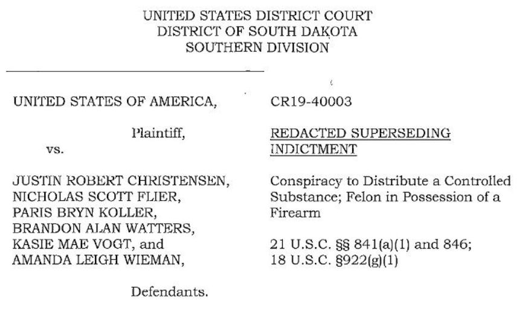
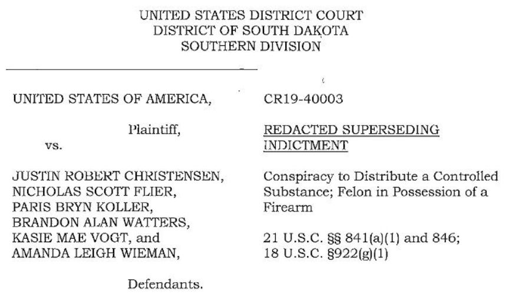

South Dakota Man Admits Buying Meth on the Darkweb
~3 min read | Published on 2019-09-11, tagged DarkWeb, Drugs, General-News, Pleaded-Guilty using 542 words.
A defendant in a methamphetamine distribution case in South Dakota admitted purchasing 500 or more grams of methamphetamine on the darkweb and redistributing the drug locally for further resale. He also admitted using his Coinbase account to fund the drug trafficking operation and to help conceal the proceeds of the operation.
In February, the U.S. Attorney’s Office of the District of South Dakota released an update on federal drug trafficking prosecutions in South Dakota. The announcement contained a list of recently sentenced drug offenders, recently convicted drug offenders, and recently indicted drug offenders. Dozens of of the people named in the “Federal Indictments” section of the announcement had allegedly committed an array of drug trafficking and money laundering crimes. The overwhelming majority of all of the cases listed in the announcement involved methamphetamine trafficking and distribution.
None of the listed cases had any apparent connection to the darkweb and very little information existed outside of the indictments. However, in US. vs. Justin Christensen et al, authorities continued to add co-conspirators through a series of superseding indictments. The case involved the distribution and redistribution of methamphetamine both in and outside of South Dakota.
Some of the co-conspirators in the case pleaded guilty to standard methamphetamine trafficking charges. Many of the statement of facts provided alongside the plea agreements were fairly standard. Christensen’s guilty plea, though, was fairly unique. He admitted using the darkweb to purchase methamphetamine as well as using Coinbase to conceal the profits from methamphetamine sales.
An abbreviated section of the statement of facts is below:
As part of my involvement in the conspiracy, I used the Dark Web to purchase methamphetamine and had it mailed to me in South Dakota. I distributed the methamphetamine to co-conspirators, who then sold it to drug customers in South Dakota and elsewhere.
I knew that my co-conspirators were redistributing the methamphetamine based on conversations we had. From an unknown date and continuing until on or about November 7, 2018, I, along with at least one other person, reached an agreement or came to an understanding to conduct financial transactions affecting interstate and foreign commerce by depositing proceeds from the conspiracy to distribute 500 grams or more of a mixture or substance containing methamphetamine into my bank accounts.
I knew that these transactions were designed in whole and in part to conceal and disguise the nature, location, source, ownership, and control of the proceeds of the methamphetamine conspiracy, and that while conducting these financial transactions, I knew that the cash involved in these transactions were the proceeds from the methamphetamine conspiracy.
A co-conspirator and I deposited the cash proceeds from the methamphetamine sales into accounts in South Dakota banks and would then purchase Bitcoin through a Coinbase account. This was done in whole or in part to conceal or disguise the control of the proceeds, and so that I could use the proceeds to purchase additional controlled substances, including
As a part of the deal, Christensen agreed to forfeit six guns.
A Century Arms International AKM pattern rifle Maadi Company AKM pattern rifle Remington 12 gauge Unknown manufacturer, unknown model, 12 gauge Remington model 870 Wingmaster Beretta USA Corporation, model BU9 Nano
He faces a mandatory minimum sentence of 15 years in prison and a possible statutory maximum of life in prison.
In February, the U.S. Attorney’s Office of the District of South Dakota released an update on federal drug trafficking prosecutions in South Dakota. The announcement contained a list of recently sentenced drug offenders, recently convicted drug offenders, and recently indicted drug offenders. Dozens of of the people named in the “Federal Indictments” section of the announcement had allegedly committed an array of drug trafficking and money laundering crimes. The overwhelming majority of all of the cases listed in the announcement involved methamphetamine trafficking and distribution.
A List of Defendants in One of the Superseding Indictments
None of the listed cases had any apparent connection to the darkweb and very little information existed outside of the indictments. However, in US. vs. Justin Christensen et al, authorities continued to add co-conspirators through a series of superseding indictments. The case involved the distribution and redistribution of methamphetamine both in and outside of South Dakota.
Some of the co-conspirators in the case pleaded guilty to standard methamphetamine trafficking charges. Many of the statement of facts provided alongside the plea agreements were fairly standard. Christensen’s guilty plea, though, was fairly unique. He admitted using the darkweb to purchase methamphetamine as well as using Coinbase to conceal the profits from methamphetamine sales.
An abbreviated section of the statement of facts is below:
As part of my involvement in the conspiracy, I used the Dark Web to purchase methamphetamine and had it mailed to me in South Dakota. I distributed the methamphetamine to co-conspirators, who then sold it to drug customers in South Dakota and elsewhere.
I knew that my co-conspirators were redistributing the methamphetamine based on conversations we had. From an unknown date and continuing until on or about November 7, 2018, I, along with at least one other person, reached an agreement or came to an understanding to conduct financial transactions affecting interstate and foreign commerce by depositing proceeds from the conspiracy to distribute 500 grams or more of a mixture or substance containing methamphetamine into my bank accounts.
I knew that these transactions were designed in whole and in part to conceal and disguise the nature, location, source, ownership, and control of the proceeds of the methamphetamine conspiracy, and that while conducting these financial transactions, I knew that the cash involved in these transactions were the proceeds from the methamphetamine conspiracy.
A co-conspirator and I deposited the cash proceeds from the methamphetamine sales into accounts in South Dakota banks and would then purchase Bitcoin through a Coinbase account. This was done in whole or in part to conceal or disguise the control of the proceeds, and so that I could use the proceeds to purchase additional controlled substances, including
As a part of the deal, Christensen agreed to forfeit six guns.
He faces a mandatory minimum sentence of 15 years in prison and a possible statutory maximum of life in prison.